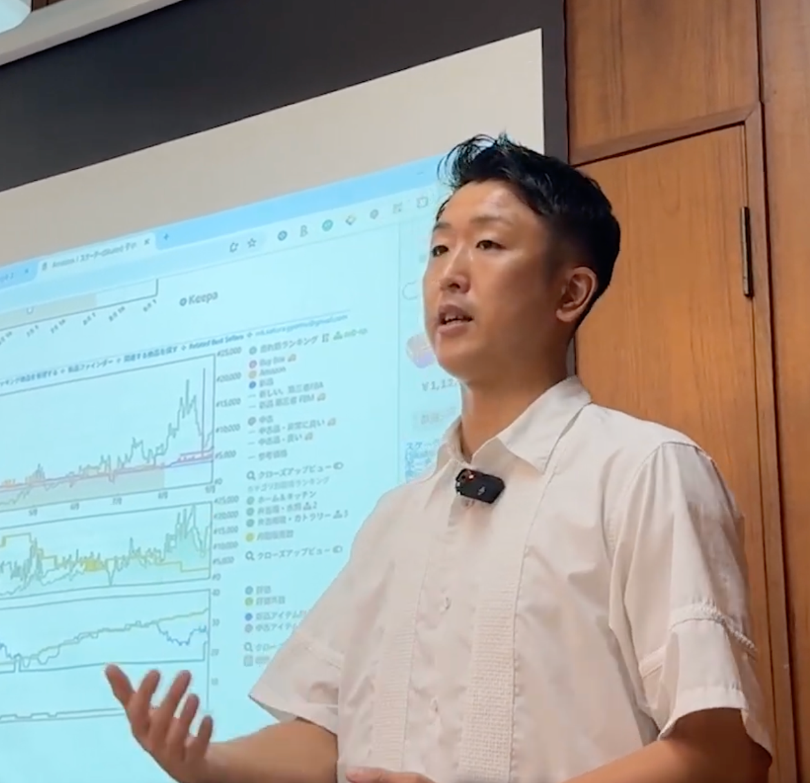

e Business Labo Personal
上場企業が提供する
250社の非公開仕入れルートで勝つ
Amazon販売説明会
2026.3.25（水）21:00〜 / Zoomオンライン / 参加費無料
Powered by aucfan group
本日の説明会について
今日は「ビジネスの説明会」です。
EBLパーソナルというサービスの内容をご説明します
最後に、ご入会をご検討いただく時間をお取りします
「聞くだけ」でも構いません。ただし──
本気で収入を変えたい方のために設計された説明会です
参加時のルール
着席して集中できる環境でお聞きください
講義中のマイクはミュートでお願いいたします
チャットでの質問は大歓迎です
この説明会が終わる頃には、「自分はどうするか」を決められる状態になっています
登壇者紹介
渡邉 泰三
株式会社ピュアネス 代表取締役
e Business Laboは、上場企業オークファングループが運営する物販特化型のビジネスコミュニティです。

会社概要
株式会社オークファン
| 所在地 | 東京都品川区北品川5-1-18 住友不動産大崎ツインビル東館 |
| 代表 | 武永 修一 |
| 設立 | 2007年6月 |
| 資本金 | 9億7,368万円 |
| 社員数 | 186名（連結） |
| 現在 | 東証グロース上場 aucfan.com運営（会員数100万人以上） 保有落札売買データ700億件以上 |

今、副業で稼げていますか？
あるいは──
「稼ごうとしたけど、うまくいかなかった」
という経験がありますか？
副業をしている人の現実
副業人口は過去5年で2倍。今や480万人が副業をしている時代です。
月収1万円未満
48.1%副業の平均月収
65,093円月10万円超の割合
2割以下副業人口は増えているのに、稼げている人は少数派。
なぜだと思いますか？
出典：厚生労働省調査（2024年）/ Job総研「2025年副業・兼業の実態調査」
Amazon物販を選んだ人の現実
Amazon Japanの流通総額は約
5兆2,000億円出品者数190万人。市場は巨大です。でも──
多くのAmazon販売者が、こういう状態に陥っています。
商品を探しても、すでに他の人が売っている
価格競争に巻き込まれて利益が出ない
毎月ゼロからリサーチをやり直している
作業量だけが増えて、収入が増えない
仕入れ先が決まっていない人は、
抜け出せない
仕入れ先が決まっているか、仕入れる商品が決まっているか。
これが、毎月の売上や収入を安定させるために最も重要な点です。
これは店舗仕入れでも、電脳仕入れでも、業者間仕入れでも──すべてに共通して言えることです。
これが作れていない人は、作業量だけが増えて、
収入が増えない状況から抜け出せない。
フロー型 vs ストック型
同じ物販でも、ビジネスモデルで収益の伸び方がまったく違います。
フロー型
せどり・転売・単発販売
売ったら終わり。毎回ゼロから。
ストック型
メーカー直取引・継続仕入れ
やるほど収入が伸び続ける。
ただし、フロー型＝ダメではありません
大事なのは、「安定した仕入れ先を自分のものにできるか」です。
店舗と商品を絞り込めば、店舗仕入れだけで月50万円を安定して稼いでいる人もいる
情報の取り方が上手くなれば、自分の得意なやり方を見つけることができる
電脳でも、業者間でも、店舗でも、仕入れ先が「定まる」ことが最も重要
手法は何でもいい。ただし──仕入れ先が「毎回イチからリサーチ」のままでは、どの手法を選んでも、積み上がらない。
では、仕入れ先を「定める」ために何が必要か
まず、モノの流通構造を理解してください。
皆さんが普段仕入れているのは、こういった場所ではないでしょうか？
これらは流通の中では「下流」に位置します。
下流が悪いわけではありません。ただし、下流だけに頼っていると仕入れ先が「定まりにくい」。
流通の構造を理解する
（製造）
中間マージン
さらにマージン
（仕入れ）
← 上流ほど仕入れが安い →
だからこそ、「上流のルートも持っておく」ことが武器になる。
上流のルートを持つと、何が変わるか
上流（メーカー・問屋）と直接つながれば──
仕入れ先が「定まる」
同じメーカーから継続的に仕入れられる
価格競争から離れられる
一般に出回らない商品にアクセスできる
利益率が構造的に高い
中間マージンが少ない
メーカー仕入れの3つの手法
メーカーに直接アプローチ
公式サイトから問い合わせ / 展示会に参加
壁：個人では相手にされない
問屋・卸サイトを使う
NETSEAやスーパーデリバリー等に登録
壁：MOQが大きい / 商品が被る
メーカー商談会に参加する
業界団体主催の商談会でメーカーと対面交渉
壁：開催地が限定 / 毎月通えない
つまり「知識」があってもできない理由がある
メーカー仕入れのやり方は、調べればわかります。でも、実際にできるかどうかは別の話です。
個人が超えられない3つの壁：
信頼の壁
メーカーは実績のない個人と取引したがらない
ロットの壁
最低発注数量が個人には大きすぎる
リソースの壁
商談・開拓・交渉に時間とコストがかかる
ただし──
もし、250社以上のメーカー・問屋と
直接取引できたら？
リサーチ不要で、利益が出る商品リストにアクセスできたら？
……その答えが、今日この説明会のタイトルです。
Answer
それを可能にしたのが
上場企業オークファングループです
グループ傘下にOSR（大阪船場流通マート）を持ち、国内メーカー商談会を開催
現在250社の国内メーカー・問屋と提携。卸先は大手ドラッグストアなど
上場企業だから、メーカーが信頼して取引する。8年間かけて構築された250社以上のインフラ。
巷のビジネススクールや個人コンサルには、この仕組みは絶対に真似できません。
実際の企業リストを
画面共有しながらお見せします
250社以上のメーカー・問屋との取引ネットワーク
メーカーリストを手に入れた後のリサーチ方法
リストがあっても、「どの商品を仕入れればいいか」がわからなければ意味がありません。
STEP 01
メーカーから届いた
商品リストを確認
STEP 02
Amazon上で販売価格と
手数料をチェック
STEP 03
仕入れ値との差額で
利益シミュレーション
リストさえあれば、リサーチの手順はシンプルです。
個人が1社ずつ開拓したら、何年かかるでしょうか。
250社の非公開仕入れルートとは
「非公開」の意味は3つあります。
一般には公開されていない
外部に出品ルートや卸条件を公開しない
EBL会員限定でアクセスできる
誰でも使えるわけではない
競合に知られていない商品
他のAmazon販売者と被りにくい
つまり、このルートを持っているだけで、価格競争とは別次元に立てる。
メーカーたった2社のみのアカウント（2026年1月実績）
月利益 74.5万円 利益率 38.9%
販売数
1,479 コ売上金額
1,915,293 円利益額
745,951 円CASE 01 & 02
実例商品の紹介
CASE 03 & 04
実例商品の紹介
OSR商談会の現場で、実際に仕入れをした記録
伝説の動画
「情報がある環境」に身を置くだけで、こういうことが起きる。
その衝撃的な内容を、スクリーンショットでお見せします。
伝説の動画より
商談会の現場で目玉商品を発見

段ボールに大量の商品。これだけの種類が問屋から直接手に入る環境がOSRです。
伝説の動画より ─ 商品例
ちいかわシール

Amazon 1,750円 / 仕入れ 273円 → 1個あたり利益 900円
伝説の動画より
そして、この日の合計は──
情報が集まる環境にいたから、利益が見込める商品が見つかった。
上流情報を使えば、一般の仕入れでも精度が上がる
「上流の情報」は、メーカー直取引だけの武器ではありません。
メーカーサイトで生産終了情報をチェック → Amazonで価格が上がる前に仕入れる
商品の販売データを定点観測 → 値動きのパターンを掴む
その情報をもとに、店舗回収もピンポイントで実行できる
情報を持っている人は、どの手法を選んでも有利。つまり、「あなたを見てくれて、かつ情報が集まる環境」なら話は別です。
ただし、ここで一つ大きな壁があります
初心者がAmazon販売でまず直面する問題があります。
Amazonの出品規制
初心者ほど規制が多く、売りたい商品を出品できないケースが多い
商談会は大阪で月5日間のみ
地方在住の方が毎月大阪に通うのは現実的ではない
250社のインフラがあっても、スタートラインにすら立てない──
出品規制解除 × メーカー請求書 × 完全オンライン
BOSS DIRECT
Amazonの出品規制を解除し、
売れる商品の幅を広げる仕組み。
BOSS DIRECT の4つのメリット
メーカー請求書でAmazonの出品規制を解除
初心者が最初につまずく出品規制を、プロが間に入り解決
売れる商品の幅が一気に広がる
出品規制が解除されるほど、販売できる商品カテゴリが増える
完全オンラインで仕入れ完結
大阪に行く必要なし。パソコン1台でどこからでも
仕入れた商品で利益が出る可能性もある
出品規制解除が主目的だが、タイミングによっては利益も見込める
BOSS DIRECT 2026年1〜2月実績
これだけの規模で出品規制解除が進んでいます
商品卸個数
27,397個卸金額
2,009万円たった2ヶ月で、27,000個以上の商品が会員の手元に届いています。
BOSS DIRECTを使った出品規制解除の流れ
STEP 01
商品を選ぶ
プロが選定した商品リストから
STEP 02
規制解除申請
仕入れた商品の請求書で申請
STEP 03
出品規制解除！
売れる商品の幅が広がる
出品規制が解除されれば、スタートラインに立てる。ここがパーソナル生の強みです。
ここまで聞いて、こう思いませんか？
「すごい環境だ。でも、自分にもできるのか？」
── ここからが、本当に大事な話です。
物販スクール業界全体の、
残酷な現実を知っていますか？
物販スクール業界全体のアンケート結果
業界全体を対象にした第三者調査（出典：物販総合研究所 2024年1月）
実際に稼げた人
わずか3人に1人（33%）
「騙された」と感じた人
5人に1人（20%）
なぜ、こんなことが起きるのか？
「環境」だけ渡して、「あなた」を見ていないから
一人ひとり、状況はまったく違うのに──
目的
副業 or 本業
使える時間
1時間 or 8時間
資金
10万円 or 100万円
それなのに──
全員に同じカリキュラムを渡して、「あとは頑張ってください」。
だから、3人に2人が脱落する。
EBLには最高のインフラがある。でも──
「環境はあるけど、自分に合った商品の選び方がわからない」
「メーカーとの取引ルートはあるけど、何から始めればいいか迷う」
「一人で進めていると、途中で立ち止まってしまう」
インフラだけでは、足りなかった。
だからこそ、次の一手を打ちました。
それが、EBLパーソナルです
一人ひとり、環境が違う。状況が違う。目標も違う。
あなたの状況に合わせて、あなただけのプランを作る。
メーカー仕入れは最強の選択肢のひとつ。
でも、それが全員に合うとは限らない。
物販にはさまざまなビジネスモデルがあります。
メーカー仕入れ
店舗せどり
中国輸入
定点観測物販
EBLパーソナルなら、あなたの状況に合ったモデルを一緒に選べます。
資金・時間・経験に応じて、最適な道を一緒に見つける。それがパーソナルの強みです。
EBLパーソナルのトレーナー
あなたに合った専門トレーナーがいます
異なる専門性を持つトレーナーが、同じコミュニティに在籍しています。
これだけ多様な専門トレーナーが同じコミュニティにいる。EBLパーソナルだけの環境です。

パーソナルジムと同じです
ジムに行くとき、最初に何をしますか？
まず、あなたの体を見る。
何を鍛えたいのか。どこが弱いのか。どんな生活をしているのか。
それを見た上で、あなたに最適なトレーナーをつける。
EBLパーソナルも同じ。あなたに合ったビジネスモデルを選び、そのモデルに精通したトレーナーを配置する。
しかも、トレーナーは交代できる
同じ金額の中で、担当トレーナーを変更できます。
モデル変更
メーカー仕入れ→店舗せどり
交代OK
ステージ変更
副業→本業に切替
交代OK
相性が合わない
トレーナーとの相性
追加料金なし
こんなビジネススクールは、他に存在しません。
インフラ × パーソナル ＝ EBLパーソナル
EBLパーソナルの具体的内容
あなた専用のビジネスカルテを作成
STEP 01
状況ヒアリング
STEP 02
ビジネスモデル作成
STEP 03
指導案の作成
STEP 04
行動指標の作成
あなたの状況に最も合った専属トレーナーをアテンドします。
こんな方にEBLパーソナルはおすすめです
当てはまるものにチェックしてみてください。
収入の柱をもう1本作りたいけど、何からやればいいかわからない
メルカリはやったけど、次のステップが見えない
Amazonアカウントの開設や出品規制でつまずいている
仕入れ先の開拓方法がわからない
一人で続けるモチベーションが保てない
自分に合ったやり方を教えてほしい
高額コンサルに騙されたくない
1つでも当てはまるなら、パーソナルがあなたの答えになるはずです。
一般的なコンサルの価格、知っていますか？
情報商材
10-50万円高額スクール
30-80万円個別コンサル
30-100万円しかも、期間が終われば終了。サポートも環境も途切れる。
e Business Labo パーソナル ─ 2026年4月生 募集開始
EBLパーソナルの価格
月額
入会金（初回のみ）
10万円
半年継続で
月額 4万円
1年継続で
月額 3万円
なぜ、この価格で提供できるのか？
「稼げるなら自分でやればいいじゃないですか」
──よく聞かれます。正直に答えます。
理由は、スケールメリットです。
仲間が増えれば仕入れロットが大きくなる。コストが下がり、全員の利益率が上がる。
あなたが稼ぐことが、コミュニティ全体の力になる。

これが、我々の描く未来
一人で戦う時代は、もう終わりました。
仲間と一緒に仕入れて、一緒に成長して、一緒に稼ぎ続ける。
EBLパーソナルは、あなたの一生涯のパートナーです。
ここまで聞いて、こう思っていませんか？
「で、自分は何から始めればいいの？」
その答えを、30分で出します。
無料パーソナル診断
渡邉・瑞稀が1対1であなたの状況を診断します。
渡邉 泰三

瑞稀
あなたの目標・資金・使える時間をヒアリング
あなたに最適なビジネスモデルをその場でご提案
今後やるべきことが明確になる → もう迷わない
入会する必要はありません。
診断を受けるだけで、「次の一歩」がわかります。
本日のセミナー参加者全員に、
1回限りの診断受講権利があります
※本日中のお申し込みに限ります
ただし──
1回の診断時間
30分診断スタイル
1対11日の対応人数
上限あり早い者順で埋まっていきます。
今から3分間、申込みの時間を取ります
お申込みはQRコード or Zoomチャットの LINEリンクから
悩んでいる時間が、一番もったいないです。
「いつかやろう」の「いつか」は来ません。今日がその日です。
お申し込みありがとうございます
渡邉 泰三
瑞稀
本日ご参加いただいたお礼に…LIVE参加特典もお渡しします！
参加特典はこちらから
QRコードを読み取ってお受け取りください
それでは、質疑応答に入ります。
気になることがあれば、チャットで何でも聞いてください。
質疑応答
チャットで何でも聞いてください。
パーソナル診断
LIVE参加特典